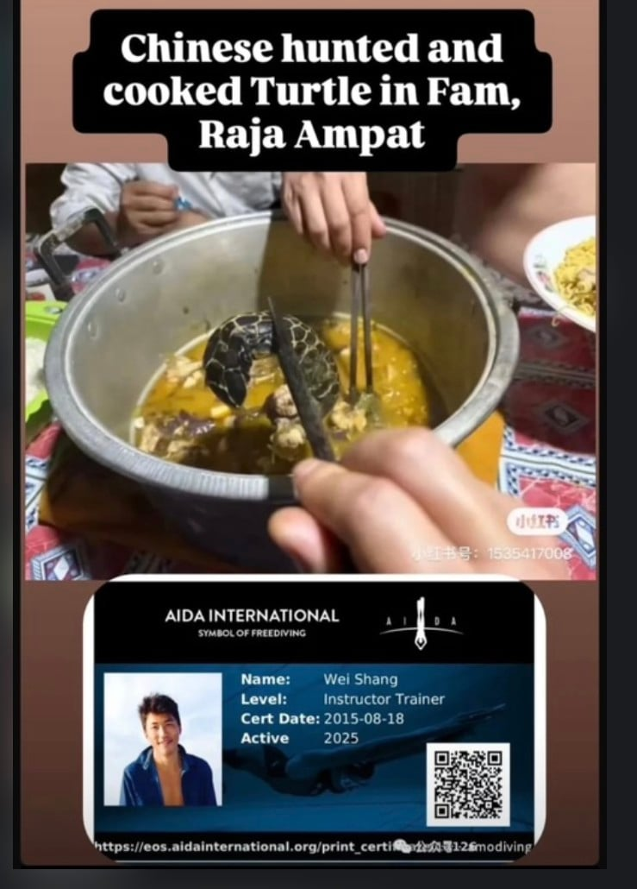

(영상 짧지만 굉장히 잔인하고 불쾌함. 시청 안하는걸 권함)
인도네시아에서 중국인 다이버가 바다거북을 스피어헌팅으로 죽임
이것만으로도 이미 불법인데
심지어 해당 바다거북은 멸종위기종이었음 (매부리바다거북)
잡아먹기 위해 죽였다고 하고
먹는 모습을 자기 SNS에 올리기까지 함
다시 말하지만 저 바다거북은 멸종위기종임

너무 충격적인 건이라 해외에선 이미 신상 파헤쳐져 돌아다니고 있음
(영상 짧지만 굉장히 잔인하고 불쾌함. 시청 안하는걸 권함)
인도네시아에서 중국인 다이버가 바다거북을 스피어헌팅으로 죽임
이것만으로도 이미 불법인데
심지어 해당 바다거북은 멸종위기종이었음 (매부리바다거북)
잡아먹기 위해 죽였다고 하고
먹는 모습을 자기 SNS에 올리기까지 함
다시 말하지만 저 바다거북은 멸종위기종임

너무 충격적인 건이라 해외에선 이미 신상 파헤쳐져 돌아다니고 있음
해외에서 미친짓을 경신했다기엔 뭔가 좀 간이 부족한데...
수렵을 못해서 안달이네 좆 미개한 그 국적
예전에 시골집에서 중공년놈들 채용했는데 일하다 말고 사라져서 찾아보니 야생 청둥오리 몇마리 잡아서 오는데 할말이 없더라
알았냐 몰랐냐 그게 문제일듯
몰랐을수가 없는 위치임
일반 관광객이 아니라 10년 이상 경력 강사라
모르는게 불가능함 애초에 스쿠버로 사냥하는거 자체가 개미친새끼임
그치 쥐도새도모르게 신비해지도록하자
밑에있는 카드는 AIDA가 프리다이빙쪽에선 꽤 알아주는 단체인데 밑에 인스트럭터라는건 강사란소리임.
근데 이런말하긴 그렇지만.. 동해쪽 남해쪽에서 흔히 머구리라고 물고기 잡고하는거 많이함.. 다 레벨은 강사임. 그급 아니면 머구리 힘듦. 동해쪽에서 뭐 배 스크루에 갈리는 그런경우 아니면 대부분이 저 머구리하다가 뒤지는거임 저렇게 멸종거북이를 죽이거나 하지는 않지만.. 그리고 플라스틱빨대 어쩌고 이딴거해봤자 바다 플라스틱의 70%는 그물 때문임.. 저새키도 나쁘지만.. 거시적으로 봤을때는 인간자체가 지구의 바이러스다
좆간... 좆간 네버 체인지...
프리다이빙 강사인 거랑 멸종위기 거북이 밀렵이 불법인 거랑은 상관 없잖음. 그리고 그물 등으로 생태 위험 받는 건 별개의 문제고 어업 종사자들은 그게 생업인데 프리다이빙 강사는 밀렵이 생업이 아닌데 다른 인간들의 잘못이 저 인간의 죄를 정당화시켜주지 않음.
프리다이빙 강사 수준의 전문가가 보호구역에서 멸종위기종을 밀렵하고 해당 영상을 지 손으로 올렸다? 욕 먹는 거로 끝날 게 아니라 형사 처벌하고 업계에서 자격 박탈 시켜야할 일이지.
https://youtu.be/YhH251gzd7U?si=1hmWNsyIXvub36BV
이거 생각났네
바다거북 눈 질끔 감는데 불쌍함
중국인이 뭔가 해도 이젠 놀랍지도않음ㅋㅋㅋ
중국인이 중국인했다. 전세계가 싫어할만함. 과시용으로 멸종위기종 잡아먹냐.. 우리나라에서 매미잡아먹고
ㅊㅉㅈㅉ
저걸 먹는다고?
좆같은새끼
어휴 씨발
잘못한건데 이게 막 잔인하고 불쾌한가는 잘 모르겠네
충?격?
영상 자체는 일반적인 스피어피싱하고 크게 다르지 않음
멸종위기종이면 건들면 안되지.
근데 본문의 거북이 죽이는 영상이 그렇게 굉장히 불쾌하고 잔인함? 흠
저 중꿔가 미개하고 병신인 건 맞는데
그냥 평범한 수렵 영상이 뭐가 잔인하고 불쾌하다는 거임? 2천년 전에 태어났으면 굶어 죽었겠누
보호종이잖아
능지처참
아니 보호종이잖어
중국인들은 이렇게 사고하냐?
다이버로써 진짜 경악을 금치못함
어떻게 저런 미개한 짓을
멸종위기종인 바다거북은 의외로 맛이 좋다고 함. 알도 맛있다고. 전 세계적으로 밀렵이 금지되어 있으나 바다거북 외에 단백질 섭취가 제한되는 원시 부족들에게는 제한된 한도 내에서 바다거북을 잡을 수 있게 허가해 주기도 함.
다만 바다거북 중 일부 종을 먹으면 켈로니톡시즘(Chelonitoxism)이라는 식중독에 걸릴 수 있음. 바다거북의 체내에 축적된 독소가 원인으로 추정되며 복통, 구토, 설사, 마비, 간 괴사 등을 유발함. 바다거북을 날것 또는 충분히 익히지 않으면 발생한다고 하며 치사율이 약 28%에 달하는 매우 위험한 중독으로 특별한 해독제나 치료법이 없음. 이러한 바다거북 중독은 요즘에도 태평양 원시부족들에게서 가끔 발생함.
다이버들은 거북이 ㅈㄴ좋아하지않나 애초에 뭐 쳐먹으려고 다이버하는 새끼였네 자격 영구박탈 가즈아
당연 형사처벌 받아야할 일을 말 같지도 않은 물타기하면서 쉴드치는 애들은 도대체 뭘까.
조선족인듯
사실 혐오감은 평화롭게 살고 있는 동물을 잔인하게 죽였다는 것에서 나오는 것 같고 멸종위기라던지 불법 이런 부분은 사후적인 이유가 아닐까 싶네(왜 기분이 나쁜가에 대한 얘기임)